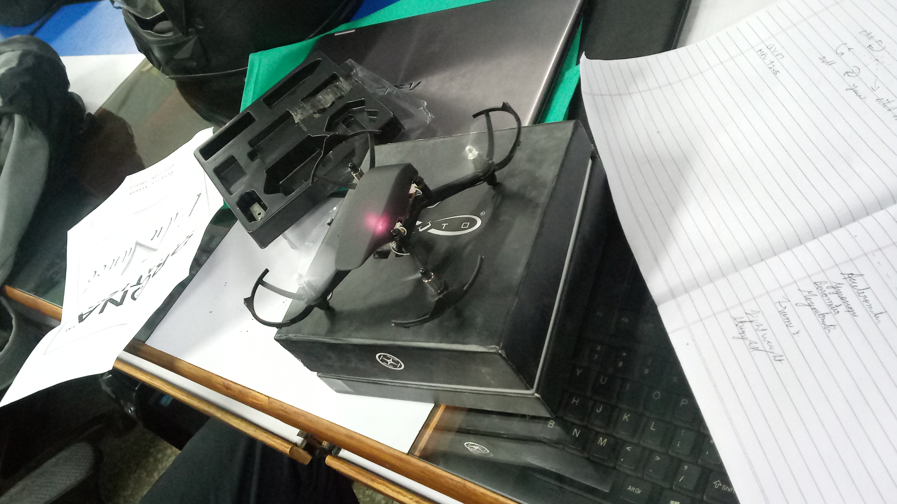
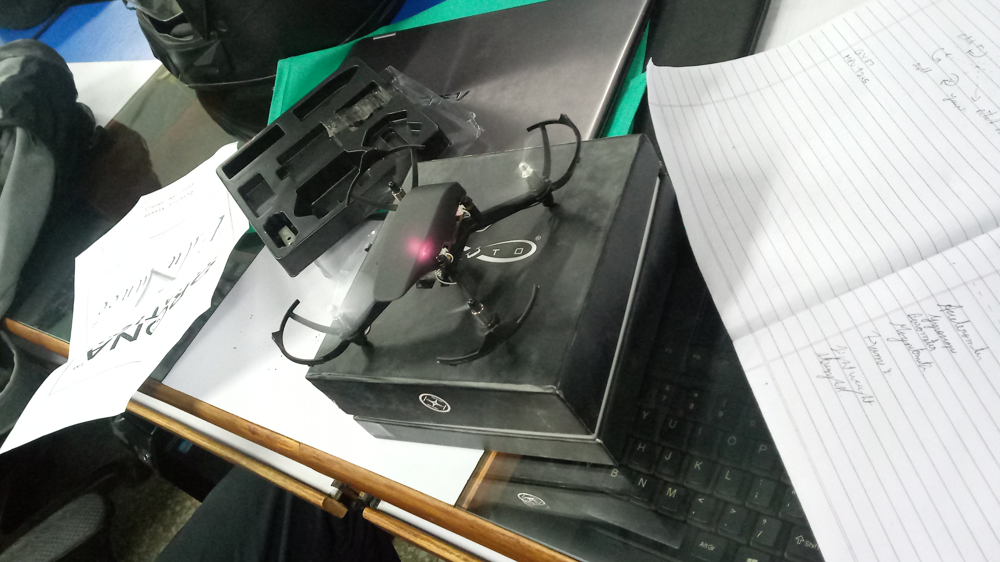
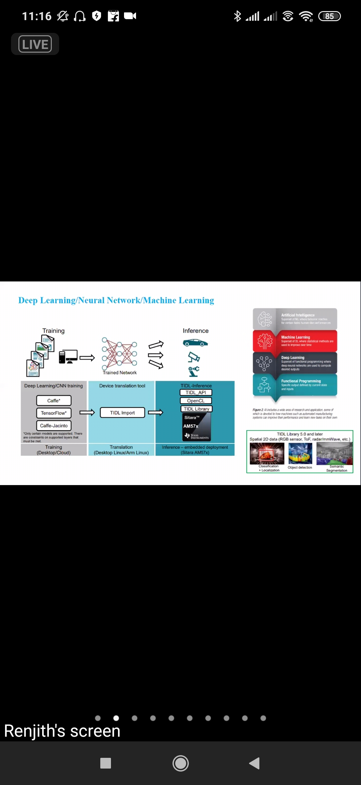
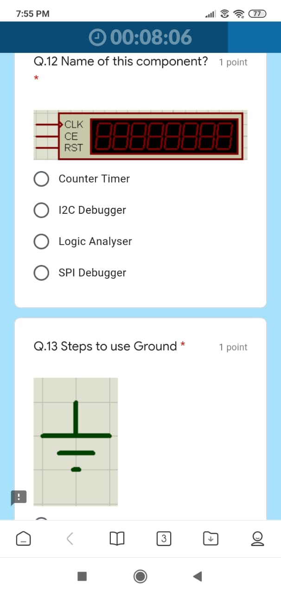
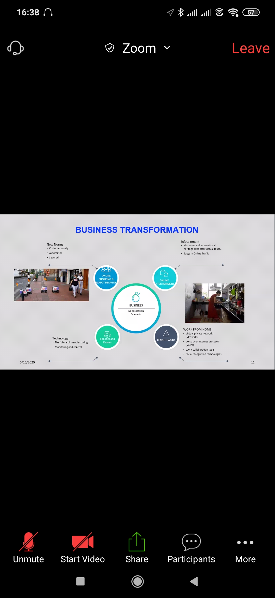
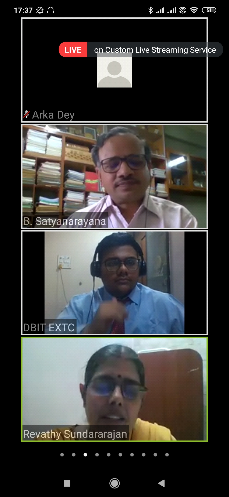
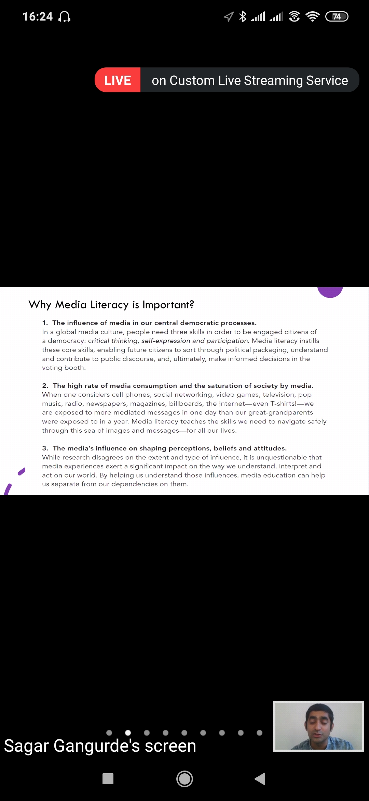
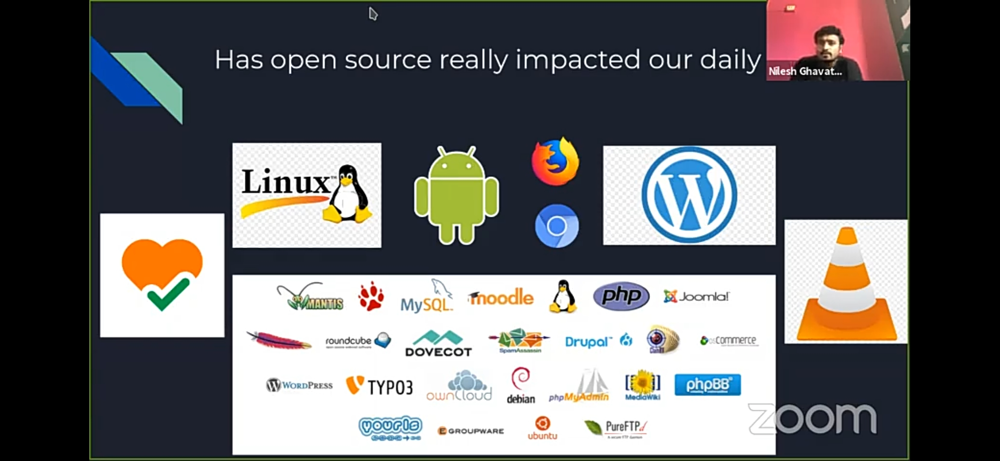

2020
Drone Making
What is aviation, introduction to concept of done, fundamentals of aviation and Pluto, the construction and flying of a drone were explained to participants. Students had to assemble the components, install the app for flying drone on eduvance website and then connect the phone to the drone, in order to fly the drones.
 

ROBOSOCCER WORKSHOP
Students and visitors were made aware about applications, possible projects that can be made using ESP-8266.Its aim was to learn about ESP 8266 Microcontroller, learn to make a robot interfaced with NODE MCU module and to control the robot using a WIFI application.

CAREER OPTIONS AND OPPORTUNITIES FOR B.E., EDT AND EC GRADUATES WEBINAR
CAREER OPTIONS AND OPPORTUNITIES FOR B.E., EDT, AND EC GRADUATES WEBINAR was conducted at Don Bosco Institute of Technology, Mumbai on 11th August, 2020 by Mr. Renjith C. V. (Electrical Architect/Product Designer at Phillips India LTD Pune). He talked about the product development cycle followed in the industry with a detailed explanation of each process., about the expectations of the industry from an engineering graduate and about the interview process, resume building as well as an overview of the different jobs. He also gave an overview of the software’s used in industries as well as the projects to focus on for better job opportunities.
CONSULTING CAREER PATH WITH AN ENGINEERING BACKGROUND WEBINAR
Consulting Career Path with an Engineering Background Webinar was conducted at Don Bosco Institute of Technology, Mumbai on 25th August, 2020 by speaker Dr.Tejas Pawar (DBIT Alumni, PhD Industrial Engineering (University of Texas), Senior Consultant, SDLC Partners LP. Pittsburgh, Pennsylvania and Consulting expertise in the area of Project Management and Data Analysis)
Techical Quiz Event
The Proteus and Arduino Quiz was held on 5th August 2020 and the Iot AI quiz was held on 12th August 2020.


Webinar on “Emerging Trends Post COVID-19”
The IEEE and IETE student bodies of DBIT organized a webinar on “Emerging Trends Post COVID-19” on the 16th of May, where the speaker was Mr. Ganapathy Venkatachalam, Technical Advisor – ETA Group of Companies. In the session the speaker discussed, how this current change would be a great opportunity for all of us to develop and learn new skills, how change is key and how students can take new steps to advance into the developing world. Talking about the education sector, he mentioned about the Ericcson-UNESCO collaboration and how they were working to inculcate VR in training for teachers. He mentioned how the growth of fields like 5G, AI, Blockchain, Automation and IOT were affected and what steps the industry is taking to turn the situation on its head. The speaker illustrated the use of Robotics and Drones in sanitation, delivery and the challenges that this sector faces in areas like high skill and maintenance. Mr. Venkatachalam also showed the road map for the future of manufacturing in Process Automation, Digitizing operations, product and service innovation using AI and ML. He also discussed about the progression of the Indian Ecosystem and the benefits of Home Testing, Information Management, Public Hygiene and Retail and how it will be vital in the coming years as a country.The speaker discussed about how Supply Chain 4.0 will help in restructuring companies and also rethink the way they design their supply chains to satisfy customer expectations and build a faster and organized method for themselves and thus concluded the webinar.



Webinar on “Physics and Engineering”
The IEEE and IETE student bodies of DBIT organized a webinar on “Physics and Engineering” on the 21st of May, where the speaker was Dr. Satyanarayana Bheesette. Dr. Satyanarayana began with STEM and Physics explaining each part of STEM i.e. Science, Technology, Engineering, Mathematics, and how Physics fits into this.The speaker then spoke about scientific curiosity and how such curiosities led to the discovery of important research topics giving rise to applications in various fields.He then shifted to talking about the various particles that matter is made up of like muons, Higgs boson, leptons, photons, etc. and how these particles were discovered. The various laboratories like CERN, TIFR, LIGO, FAIR located all around the world are dedicated to researching these particles and discovering new particles.Dr. Satayanarayana further talked about the various advancements brought about by the physics experiments like the silicon detector, the PET scan, X-Ray scan, MRI scans, MPI scans, etc. He also talked about the various advances physics led in the field of computing like the World Wide Web, grid computing, cryptography, etc. The speaker then concluded after explaining about Neural Networks and Artificial intelligence and how these technologies are helping solve problems.
Webinar on “Critical Media Literacy”
The IEEE and IETE student bodies of DBIT organized a webinar on “Critical Media Literacy” on the 27 May 2020, where the speaker was Mr. Sagar Gangurde, Director Indian Programs, Seeds of Peace. Mr. Gangurde illustrated why Critical Media Literacy is important in our daily life, how media influences our central democratic process. Further, he added how the consumption of Media influences the perceptions, beliefs and attitude of the society and explained the importance of visual communication and information, the need for lifelong learning, how it builds the fundamental understanding of the role of media in the society and the essential skill to inquire and self-express as citizens of democracy. He moved on to explain what is not considered as Media Literacy, and introduced the participants to the 5 CML key points which are Analyze, Access, Evaluate, Create and Participate. He concluded by talking about News Literacy and about the difference between journalism and other sources of information and how it affects the society.

Webinar on 'Open Source Technology: A Step Towards Collaborative Learning'
The IEEE and IETE student bodies of DBIT organized a webinar on “Open Source Technology: A Step Towards Collaborative Learning” on the 5 June 2020, by Prof. Prasad Padalkar, Prof. Tayyabali S. & Prof. Nilesh G. They explained how purchasing open-source software gives the person the right to modify the code.The 4 basic rules laid by the Free Software Foundation, 1. Right to run the program 2. Right to Study and Change the program 3.Right to Redistribute copies 4. Right to Distribute Modified version; were explained Tthe role of open source in education, the VUCA principle, how open source technologies have impacted our lives and the major Open Source software we use in our daily lives like android, chrome, UNIX were discussed.